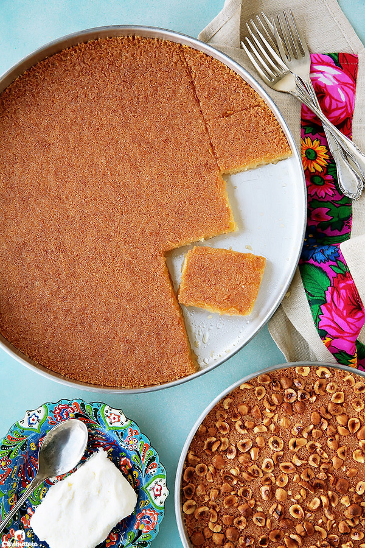

Basbosa

Description
The search for the perfect, aunthenic Egyptian-style basbousa stops here! This one is super soft, dense, never ever cake-y, and melt-in-the-mouth delicious. Easily rivals the pastry shop’s.
Ingredients
- 500g (3 cups) medium grind white semolina (semeed NOT basbousa mix)
- 150g (2/3 cup plus 1 tablespoon) ghee, melted
- 50g (1/3 cup packed) unsweetened shredded coconut (aka desiccated coconut), (optional but highly recommended; could be reduced)
- 150g (2/3 cup) whole milk
Steps
- Start by making the syrup as it needs to cool down to room temperature before using.
In a medium saucepan, combine together the sugar, water and squeeze of lemon juice.
- Set the saucepan over medium-high heat. Gently stir the mixture, as it heats, being careful not to get any sugar granules up the sides of the pan. Continue stirring until the sugar has completely dissolved. Bring mixture to a full boil, then remove immediately from heat. Set syrup aside to cool completely before using.